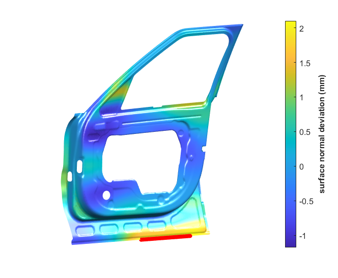
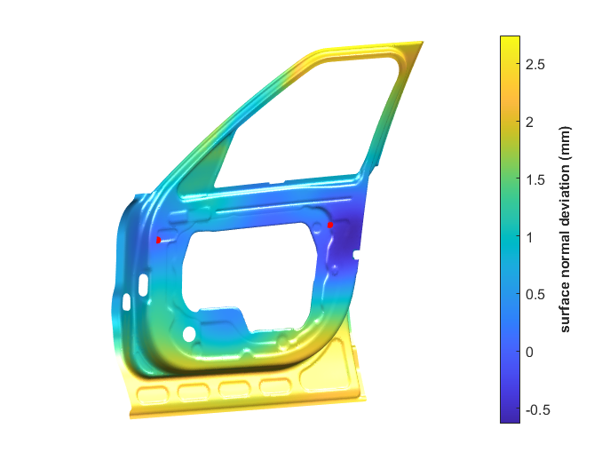

morphing-Gaussian Random Field (mGRF) methodology’s documentation¶
Alphabetical list of functions and scripts with description¶
-
contourDomainPlot(fem, domainID, userData, colourBar, varargin)¶ A helper fucntion to create contourplot of a given mesh (domain) within fem structure of VRM for data specified by the user.
- Parameters
fem – fem structure from VRM after loading the mesh
domainID – Domain ID of the current mesh file in the fem structure
userdata – vector of values to visualise, length = nNode X 1
colourBar – 0 or 1, creates a colourBar when = 1
vargin – typically ax, axis to plot the figure, if empty a new axis is created
Returns: The coutourplot of the mesh with user given values ar mesh nodes
-
demo_mGRF¶ A script demonstrating the abilites of non-ideal part modelling and simulation using the mGRF methodology. This script shows the modelling and simulation of non-ideal parts of an automotive door inner for the local deformation of flange.
The optimum covariance function parameters are loaded from a file which was generated earlier. Key options with comments describing each of the option are as follows:
1 2 3 4 5 6 7 8 9 10 11 12
% Hyper-parameter options mGRF.HypParmOpt.Type ='loadFrmFile';% could be 'measData'| 'manual' | 'loadFrmFile'|'default' % For 'file' mGRF.HypParmOpt.File = 'hypAllAl405NewMeshContSurf.mat';%name of the .mat file containing optimised hyper parameter values for a batch of deviations % Non-ideal deviation options mGRF.NIdev.Type = 'flange'; String defining the type of non-ideal deformatios mGRF.NIdev.Probability = 0.97;%confidence value that max form error is less than specified value (between 0-1) mGRF.NIdev.MaxFormError = 2;%Maximum specified form error mGRF.NIdev.NBasis = 40;%Number of basis to use for interpolating the covariance matric for whole mesh mGRF.NIdev.Local.ID = 17512:17568; % for flange bottom;%vector containing node IDs of all nodes being manipulated mGRF.NIdev.Local.Dev = 2.*ones(size(mGRF.NIdev.Local.ID));%nID X 1, vector of local deformation of key points
Running this script will generate non-ideal parts as illustrated below
Fig. 1 An illustration of generated non-ideal part with flange deformation of 2 mm and a form error of 2 m with statistical confience of 97%¶
-
demo_mGRF_bending¶ A script demonstrating the abilites of non-ideal part modelling and simulation using the mGRF methodology. This script shows the modelling and simulation of non-ideal parts of an automotive door inner for the global deformation of bending.
The optimum covariance function parameters are obtained from the a complete part measurent. This demo uses a single part measurement, many measuremets can be used and average or any other statistical sampling can be used to obtain the optimum parameters. The optimsation process to obtain covariance function parameters is computationally intensive.
Key options with comments describing each of the option are as follows:
1 2 3 4 5 6 7 8 9 10 11
% Hyper-parameter options mGRF.HypParmOpt.Type ='measData';% could be 'measData'| 'manual' | 'loadFrmFile'|'default' mGRF.HypParmOpt.devPatterns= devPatterns(:,3)';% 1 x nNodes vector of non-ideal part deviations % Non-ideal deviation options mGRF.NIdev.Type = 'bending'; String defining the type of non-ideal deformatios mGRF.NIdev.Probability = 0.97;%confidence value that max form error is less than specified value (between 0-1) mGRF.NIdev.MaxFormError = 1;%Maximum specified form error mGRF.NIdev.NBasis = 40;%Number of basis to use for interpolating the covariance matric for whole mesh mGRF.NIdev.Bending.ID = [24460;7703];%Vector of length 2 representing two nodes forming the bending axis mGRF.NIdev.Bending.Theta = 0.2; % the angle of bending about the axis in degrees
Running this script will generate non-ideal parts similar to the illustration below. The non-ideal part will not be same as the illustration due to the stochastic nature of form error.
Fig. 2 An illustration of generated non-ideal part with bending deformation of 0.1 degrees about axis defined by two nodes a1 and a2. A form error of 1 mm with statistical confience of 97 % is also superimposed.¶
-
getAssembledKe(fem, domainID)¶ A function to assemble the stiffness matrix of a given mesh element=element strucutre
- Parameters
fem – fem structure from VRM after loading the mesh
domainID – Domain ID of the current mesh file in the fem structure
- Returns
Ke the assemble stiffness matrix
-
getAvgKrigParmSpace(devPatterns, nodeCoord, keyPointID)¶ Function to find average optiaml covariance function parameters describing spatial pattern of non-ideal part deviations
- Parameters
devPatterns – nInstances x nNodes matrix of non-ideal deviations
nodeCoord – coordinates of mesh nodes, a nNodes x 3 matrix
keyPointID – a vector containing key points node ids. vector of length = nKeyPoints
- Returns
hyp - average of optimum parameters in format required by the gp toolbox
allNoiseVar, allParam -optimum value of parameters for individual deviation sets
devPatterns - Simulated or measured node deviations for the whole part
Note
depends on gpr toolboxpath
for now gives only provides matern covariance funciton parameters as output
-
getElementStifness(fem, eleId)¶ Helper function for
getAssembledKe()
-
getMgrfDev(mGRF, meshCoord, keyPointsID, meshStiffMat, nSample)¶ The main function to simulate non-ideal parts using morphing-Gaussian Random Fields(mGRF). All options to the generation of non-ideal parts are to be provided in the mGRF structure. The mGRF structure has to main inputs:
mGRF.HypParmOpt.Type - corresponding to the different ways to input the hyper-parameters of the Gaussian Random Field
mGRF.NIdev.Type - corresponding to the type of non-ideal deviatons to be slimulated
- Parameters
meshCoord – coordinates of all mesh nodes an nNodes X 3 matrix
keyPointsID – node ID of all the key points
meshStiffMat – The stiffness matrix for the whole mesh
nSample – Number of non-ideal part instances to be simulated
mGRF.HypParmOpt.Type – ‘measData’ | ‘manual’ | ‘load’
Options_specific_to'measData' –
mGRF.HypParmOpt.devPatterns – nInstances x nNodes matrix of non-ideal deviations
Options_specific_to'manual' –
mGRF.HypParmOpt.sn – noise standard dev
mGRF.HypParmOpt.lScale – characteristic length scale, 3X1 vector for x,yand z directions
mGRF.HypParmOpt.sf – scaling factor (set to 1 by default)
Options_specific_to'file' –
mGRF.HypParmOpt.File – name of the .mat file containing optimised hyper parameter values for a batch of deviations%
mGRF.NIdev.Type – ‘dent’|’flange’|’bending’|’formErr’, String defining the type of non-ideal deformatios
mGRF.NIdev.Probability – confidence value that max form error is less than specified value (between 0-1)
mGRF.NIdev.MaxFormError – Maximum specified form error
mGRF.NIdev.NBasis – Number of basis to use for interpolating the covariance matric for whole mesh
Options_specific_to'bending' –
mGRF.NIdev.Bending.ID – Vector of length 2 representing two nodes forming the bending axis
mGRF.NIdev.Bending.Theta – Bending angleabout the axis in degrees
Options_specific_to'dent'|'flange'_local_deformations –
mGRF.NIdev.Local.ID – vector containing node IDs of all nodes being manipulated
mGRF.NIdev.Local.Dev – nID X 1, vector of local deformation of key points
- Returns
dev - The nNodes X nSamples matrix of non-ideal part deviations
Note
The function depends on gp Toolbox and should be in the matlab path before the
getMgrfDev()is called.
-
keyPointDistances(a1, a2, points, projectTO)¶ A function to calculate the distance from axis defined by two nodes a1 and a2 to all mesh nodes
- Parameters
a2 (a1,) – ID of two nodes defining the axis
points – nNodes x 3 matrix of points whose distance have to be calculated
projectTO – 1x3 vector specifying the plane, points have to be projected to, [0,0,1] represents z plane
- Returns
perpDIst the vector of distances of mesh nodes from the axis, length = nNodes
Note
the code calculates angle between point and line, so calculations limited to three dimensions
for this two dimensinal projectioncase perpDist gives the sign as well
-
mGRF_main¶ A script demonstrating the abilites of non-ideal part modelling and simulation using the mGRF methodology It shows the modelling and simulation of non-ideal parts of an automotive door inner for:
Local deformation of flange.
Global deformation of bending.
It also demonstrated various options to find the optimum covariance function parameters (hyper-parameters), namely:
Learn from cloud of point data
Load parameters from a file.
Set the parameters manually.
Use a default set of parameters.
-
setCovStruct(type, varargin)¶ A function to help set options of the mean and covariance fuction according to gp toolbox. Matern covariance function is used as defalult throughout
- Parameters
type – ‘default’|’user’ string
If_type_is'user'_three_vectors_are_expected –
sn – 1x1 scalar, noise standard dev (makes surface points pass through key points if zero). Default is 0.001
lscale – 3x1 characteristic length scale in x, y and z respectively, default is 20, 20, 10 mm
sf – 1x1 scalar, latent function standard dev or output scaling factor, Default is 1
- Returns
Covariance function parameters in syntax compatible with gp toolbox